Newport Travel Guide
Seaside city on Aquidneck Island in Rhode Island known as a New England summer resort and is famous for its historic mansions and its rich sailing history
Places to See in Newport
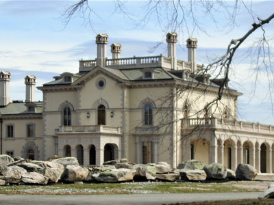
Beyond My Ken, CC BY-SA 4.0, via Wikimedia Commons; Image Size Adjusted

Astor's Beechwood Mansion
Gilded Age mansion in Newport best known for having been owned by the Astor family
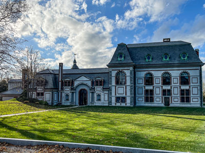
Kenneth C. Zirkel, CC BY-SA 4.0, via Wikimedia Commons; Image Size Adjusted

Belcourt of Newport
Former summer cottage featuring a heavy emphasis on French Renaissance and Gothic decor
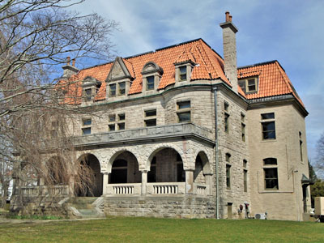
Beyond My Ken, CC BY-SA 4.0, via Wikimedia Commons; Image Size Adjusted

Bellevue Avenue Historic District
District including many of the Gilded Age mansions built by affluent summer vacationers in the city around the turn of the 20th century

xiquinhosilva, CC BY 2.0, via Wikimedia Commons; Image Size Adjusted

The Breakers
Gilded Age mansion built as a summer residence for Cornelius Vanderbilt II, a member of the wealthy Vanderbilt family
Brenton Point State Park
Recreation area at the southwestern tip of Aquidneck Island offering wide vistas of the Atlantic Ocean where it meets Narragansett Bay
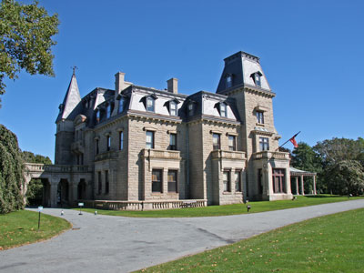
Brian Snelson, CC BY 2.0, via Wikimedia Commons; Image Size Adjusted

Chateau Sur Mer
One of the first grand Bellevue Avenue mansions of the Gilded Age in Newport is now pen to the public as a museum
Easton's Beach
The largest public beach in Newport, with a view of the Newport Cliff Walk
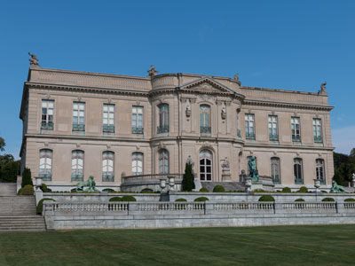
Marco Almbauer, CC0, via Wikimedia Commons; Image Size Adjusted
.jpg){kind=link}
The Elms
Large mansion designed for the coal baron Edward Julius Berwind, taking inspiration from the 18th century Château d'Asnières in Asnières-sur-Seine, France
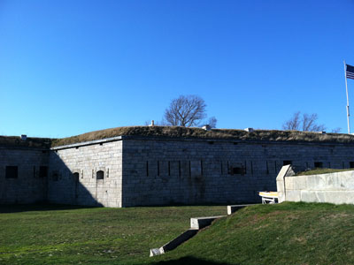
Photog001, CC BY-SA 3.0, via Wikimedia Commons; Image Size Adjusted

Fort Adams State Park
Recreation and historic area preserving Fort Adams, a large coastal fortification located at the harbor mouth in Newport
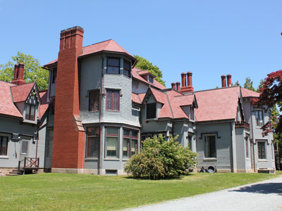
Ahodges7, CC BY-SA 3.0, via Wikimedia Commons; Image Size Adjusted

Kingscote
Gothic Revival mansion and house museum in Newport
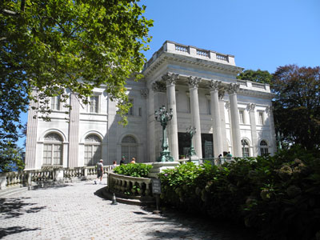
EvyRosita, CC BY-SA 3.0, via Wikimedia Commons; Image Size Adjusted

Marble House
Gilded Age mansion built as a summer cottage for Alva and William Kissam Vanderbilt and was designed in the Beaux Arts style
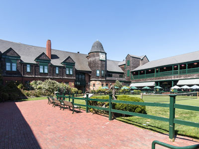
Steve, CC BY-SA 2.0, via Wikimedia Commons; Image Size Adjusted

Newport Casino
Athletic complex and recreation center built in 1881, it became a center of Newport's social life during the Gilded Age through the 1920s

Newport Cliff Walk
Considered one of the top attractions in Newport, it is a 3.5-mile (5.6 km) public access walkway that borders the shore line
-400.jpg)
Doug Kerr from Albany, NY, United States, CC BY-SA 2.0, via Wikimedia Commons; Image Size Adjusted
.jpg){kind=link}
Newport Historic District
Kacey Victoria, CC BY-SA 4.0, via Wikimedia Commons; Image Size Adjusted
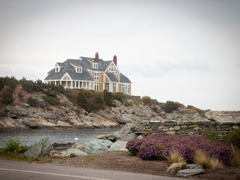
Marc Berry Reid, CC BY 2.0, via Wikimedia Commons; Image Size Adjusted

Ocean Drive Historic District
Historic district that covers street along the southern shore of Newport that consists of houses that overlook the beaches and ocean
Ochre Court
Historic site marked by a memorial plaza and interpretive exhibits commemorating the 1770 confrontation between British soldiers and colonists that became a pivotal event leading to the American Revolution
Rosecliff
Gilded Age mansions of Newport now open to the public as a historic house museum
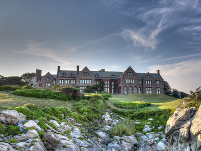
Giorgio Galeotti, CC BY 4.0, via Wikimedia Commons; Image Size Adjusted

Rough Point
Gilded Age mansions of Newport and English Manorial style home designed for Frederick William Vanderbilt
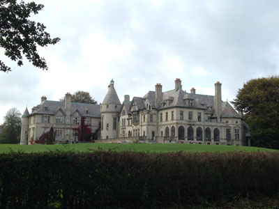
Mark Jenney, CC BY-SA 4.0, via Wikimedia Commons; Image Size Adjusted

Seaview Terrace
Mansion located in Newport designed in the French Renaissance Revival Châteauesque style was the last of the great "Summer Cottages" constructed and is the fifth-largest of Newport's mansions
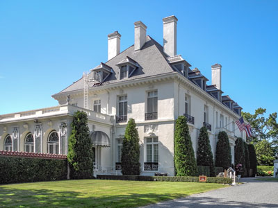
EvyRosita, CC BY-SA 3.0, via Wikimedia Commons; Image Size Adjusted

Vernon Court
American Renaissance mansion with design loosely based on 18th-century French mansion, Château d'Haroué
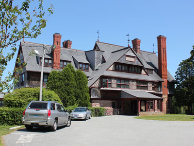
Dms1788, CC BY-SA 4.0, via Wikimedia Commons; Image Size Adjusted

William Watts Sherman House
Notable house generally acknowledged as the prototype for what became known as the Shingle Style in American architecture
Overview
Newport, Rhode Island, is a historic seaside city on Aquidneck Island in Narragansett Bay, famous as a sailing capital, as the site of the grandest Gilded Age mansions in America, and as one of the best-preserved colonial seaports in the country. For centuries it has been a retreat for the wealthy, a base for the U.S. Navy, and the home of the America's Cup yacht race and of the Newport Jazz and Folk Festivals. The city's narrow streets, wharves, and clapboard houses, and the 3.5-mile Cliff Walk along the ocean, give it a character found nowhere else in New England.
Visitors come to Newport to tour the mansions along Bellevue Avenue, such as The Breakers and Marble House, to walk the Cliff Walk, and to explore the colonial streets of the Newport Historic District. They also come for sailing, for the harbor and Bowen's Wharf, for beaches such as Easton's Beach, and for festivals and fresh seafood.
History
Newport was founded in 1639 by religious dissenters led by William Coddington, Anne Hutchinson, and others who left Massachusetts in search of freedom of conscience, and it became a haven for Quakers, Baptists, and Jews. In the eighteenth century, it was one of the five largest cities in colonial America, prospering from shipbuilding, trade, and, tragically, the slave trade, and it was home to skilled furniture makers such as the Townsend and Goddard families. The British occupation during the Revolution from 1776 to 1779 devastated the city, and it declined until the mid-nineteenth century, when wealthy Southerners and then New Yorkers began summering here. From the 1870s to World War I, the Gilded Age elite built enormous "summer cottages," and the Naval War College, established in 1884, and the naval base made it a center for the Navy.
Newport Historic District
The Newport Historic District, centered on the Point and downtown, contains the largest concentration of colonial buildings in America, with more than 400 houses and public buildings dating from the seventeenth, eighteenth, and early nineteenth centuries. Its landmarks include Touro Synagogue, built in 1763, the oldest synagogue building in the United States, and Trinity Church, a 1726 Anglican church with a tall white steeple, as well as the Colony House, a 1739 brick building where Rhode Island declared its independence from Britain in 1776. The Brick Market, a 1762 market building designed by Peter Harrison, the Redwood Library, founded in 1747 as the oldest continuously operating lending library in the country, the Hunter House, and the Wanton-Lyman-Hazard House show the wealth of the colonial port. The Newport Historical Society offers walking tours of the district's lanes, wharves, and houses, and Bowen's and Bannister's Wharves are lively waterfront areas of shops and restaurants.
Gilded Age Mansions
Newport's Gilded Age mansions, built between the 1850s and 1914 as summer "cottages" for America's wealthiest families, are among the most opulent houses ever built in the country, and many are open to the public through the Preservation Society of Newport County. The Breakers, the 70-room Italian Renaissance palazzo of Cornelius Vanderbilt II, is the grandest, and Marble House, built for William K. Vanderbilt and Alva Vanderbilt, is a white marble palace modeled on the Petit Trianon at Versailles. The Elms is a Classical Revival mansion with formal gardens, Rosecliff, designed by Stanford White, was inspired by Versailles's Grand Trianon, and Chateau-sur-Mer is a High Victorian mansion. Kingscote, a Gothic Revival house from 1841, is among the earliest cottages, while Belcourt, Astors' Beechwood, Ochre Court, Rough Point, the home of heiress Doris Duke, and the Bellevue Avenue Historic District add to the collection, and the Cliff Walk passes behind many of them.
Sightseeing and Popular Landmarks
The Cliff Walk is a 3.5-mile public path between the sea and the mansions' lawns, and the Newport Casino, built in 1880, houses the International Tennis Hall of Fame and the oldest grass tennis courts still in use. Fort Adams State Park has a large fort from 1824, the site of the Newport Jazz and Folk Festivals, and Ocean Drive is a scenic route along the coast with views of Brenton Point. The Newport Bridge, the Naval War College Museum, and the Newport Harbor Light are other sights.
Culture and Museums
The Preservation Society of Newport County runs the mansions and the Newport Mansions Holiday events, and the International Tennis Hall of Fame has exhibits on the history of the game. The Museum of Newport History, the Newport Art Museum, and the Naval War College Museum cover the city's past and arts, and the Newport Jazz Festival, founded in 1954, and the Newport Folk Festival, where Bob Dylan went electric in 1965, are held each summer. The International Yacht Restoration School and the Herreshoff Marine Museum in nearby Bristol honor sailing.
Parks
Easton's Beach, also called First Beach, is a long sandy beach with a carousel and an aquarium, and Brenton Point State Park has a rocky coast, a field for kite flying, and views of the ocean. Fort Adams State Park has the fort, a sailing school, and views of the harbor, and the Cliff Walk is a scenic path for walking. Sachuest Point National Wildlife Refuge, in Middletown, has trails for bird watching.
Seasons and Weather
Newport has a humid continental climate moderated by Narragansett Bay and the Atlantic. Summers are comfortable, with highs in the upper 70s°F, and winters are cold, with highs in the 30s and 40s°F and about 30 inches of snow. Summer is the busiest season, with sailing and festivals, and spring and fall are quieter and pleasant. Fog and nor'easters can occur, and hurricanes occasionally affect the coast.
This article uses material from Wikipedia as well as information from official tourism and institutional sources. Key references include Discover Newport, Preservation Society of Newport County, Newport Historical Society, Touro Synagogue, Newport Jazz Festival, Rhode Island Tourism, and National Weather Service Boston/Norton. Wikipedia material is from the articles "Newport, Rhode Island" and "Newport Mansions", and is available under the Creative Commons Attribution-Share-Alike License 3.0.
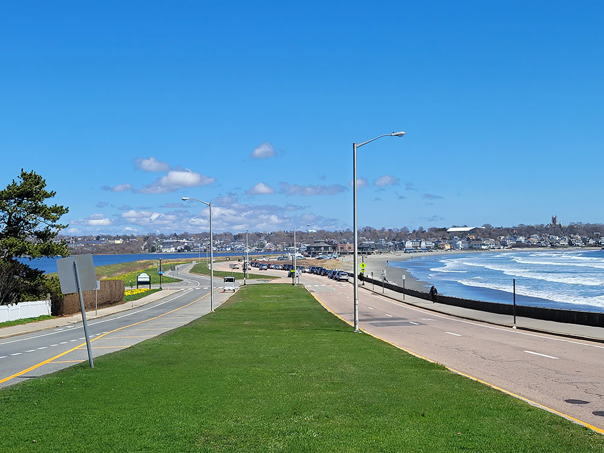

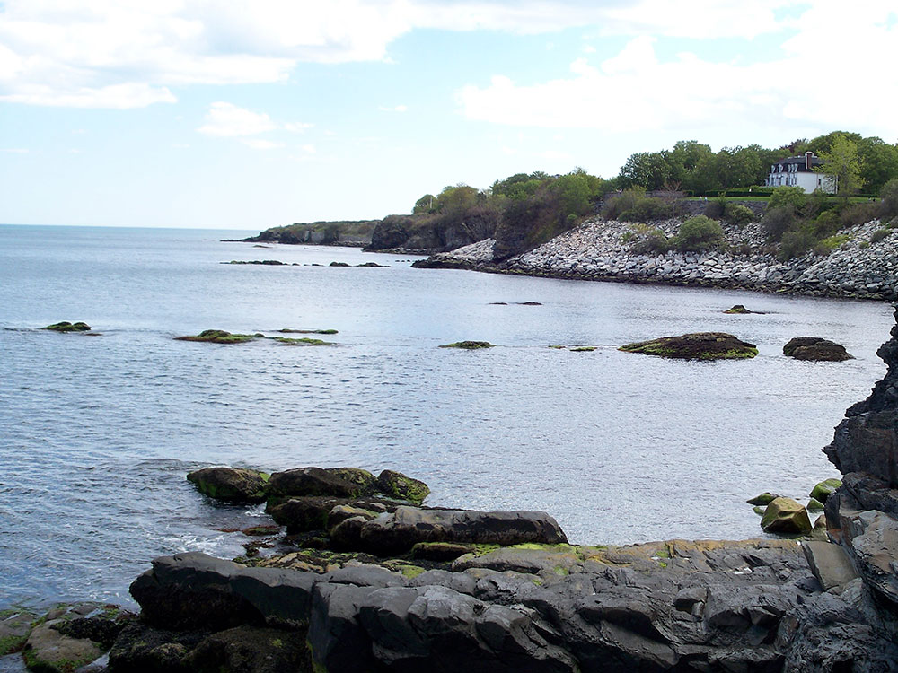
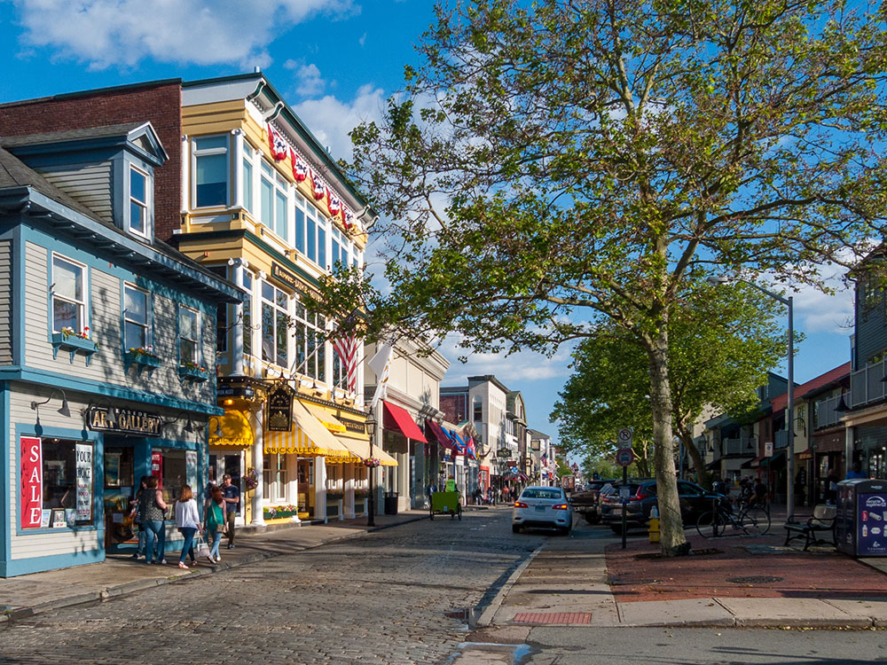